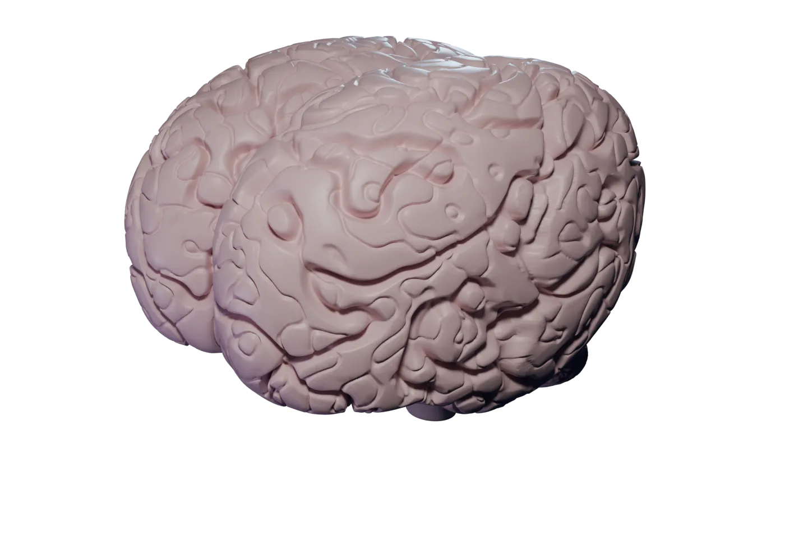

Each arc is a directed connection reported by a dynamic causal modelling study. Arcs brighten toward the region being influenced, and particles travel the same way. Click a region or an arc to read the evidence.
The pilot extracted connections from 20 papers. The full corpus has 972. This index groups them by the clinical condition named in each title or abstract, so it shows where the evidence base is deep and where it is thin.
11 open access and 9 paywalled studies across fMRI, EEG and MEG. Open one to see the study design and key finding, then trace its circuit in the brain above.
Every connection carries the page it came from and a short supporting quote, which an audit checks against the text of that page in the PDF. The quotes are kept internal and are not published here.
papers.zip as <title>/.pdf, an empty filename) to 72 unrelated Scopus rows, including the Cortex 2025 pilot pick, which was first extracted from the wrong paper (Soch et al. 2017). The matcher now enforces one PDF per row and checks every PDF's first page against its Scopus title, and the Cortex 2025 paper has been re-extracted from its real PDF. The title check also found one genuinely wrong file in the zip (the SPM12 manual filed under 10.3389/fnins.2015.00043), which needs replacing before the full run.
- in 4 Elsevier PDFs (Mao 2022 Table 3 -0.294 came out as 0.294).SMA, midline (Kasess 2008) vs. SMA, L (Lioi 2021).Split region names into parent, subregion and hemisphere, with optional coordinates seeded from AAL3 or Brainnetome, so the graph can switch between coarse and fine anatomy. This 3D view would then use real coordinates.
{ "as_written": "L_CA1", "canonical_parent": "hippocampus",
"subregion": "CA1", "hemisphere": "L", "mni_xyz": [-24, -18, -16] }
Keep the baseline sign apart from the group or condition change, and handle SPM12's log-scaled self-connections explicitly (+ means stronger self-inhibition).
{ "is_self_connection": false, "is_bidirectional": false,
"baseline_polarity": "inhibitory", "contrast_direction": "stronger_inhibition",
"numeric_value": -0.30, "units": "Hz" }
Add effect_level (first-level A, B or C; PEB on A; group test on A) so resting-state drug and clinical contrasts don't collide with task modulators.
Add connection_scale (inter-regional, intracortical laminar, receptor kinetics) and an optional receptor or subpopulation (AMPA, NMDA, GABA-A) for canonical microcircuit and conductance models.
Track recruited vs. analysed N with per-group counts, and allow an experiments[] array for methods papers with several datasets, like Friston 2003.
The page-1 title gate and the quote-against-page audit are now built into steps 01 and 03. Still to do: a vision pass over numeric tables and figures to catch dropped minus signs.
The brain is procedural: scripts/07_build_brain_model.py runs Blender headless and builds two hemispheres with noise-driven gyri, central and lateral fissures, a foliated cerebellum, a brainstem and six pairs of deep nuclei. It works in MNI millimetres (x right, y anterior, z superior) and exports a Draco-compressed glTF file.
It illustrates the layout and is not an anatomical template. Each region sits at a hand-chosen canonical location (scripts/region_coords.py). Regions whose hemisphere was not reported sit on the midline as rings.